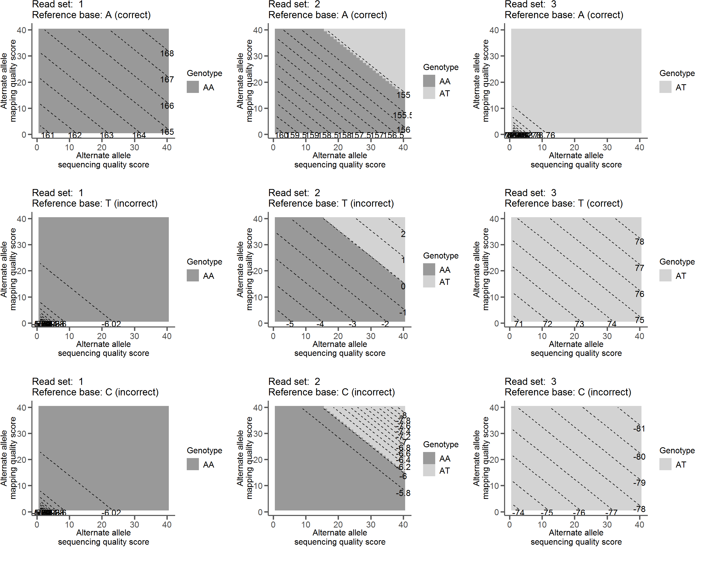

Referee's calculations
This page is a summary of the calculations that Referee uses to obtain a reference quality score \(Q_\mathbb{R}\) at a given site in a genome.
I. Genotype likelihoods
Referee can accept genotype log-likelihoods calculated with any method as long as they are properly formatted (see README). For Referee's internal genotype likelihood calculations we use the simple method described in the initial GATK publication (McKenna et al 2010). What follows is a description of that method, with the additional consideration of mapping quality.
There are 10 possible genotypes at a biallelic site:
\[ \mathbb{G} = \{\{A,A\}, \{A,T\}, \{A,C\}, \{A,G\}, \{T,T\}, \{T,C\}, \{T,G\}, \{C,C\}, \{C,G\}, \{G,G\}\} \]
Given a set of reads \(R\) at a site, we can calculate the likelihood of each genotype:
Equation 1A — diploid likelihood calculation
\[ P(R\;|\;g = \{A_1,A_2\}) = \prod_{r}^{R} (\frac{1}{2}P(b_r|A_1) + \frac{1}{2}P(b_r|A_2) ) \]
We have also implemented a likelihood calculation for the most likely base in a set of reads from haploid data, in which the possible "genotypes" are:
\[ \mathbb{G} = \{\{A\}, \{T\}, \{C\}, \{G\}\} \]
Equation 1B — haploid likelihood calculation
\[ P(R\;|\;g = \{A_1\}) = \prod_{r}^{R} (P(b_r|A_1)) \]
To calculate the probability of the mapped base at the current read \(b_r\) given each allele in the genotype \(A_i\), we can use the Phred scaled base quality score \(Q_b\) and Phred scaled mapping quality score \(Q_m\) for that base. First we convert the Phred scaled scores into probabilities of error:
Equation 2 — Error probability from base quality
\[ e = 10^{-\frac{Q}{10}} \]
Plugging in \(Q_b\) and \(Q_m\) gets us \(e_b\) and \(e_m\), respectively. These are the probabilities of error for both base calling and mapping.
Then we can calculate the probability of the base given an allele \(P(b_r|A_i)\) as follows:
Equation 3 — The probability of a base given an allele
\[\begin{equation} P(b_r|A_i) = \begin{cases} \frac{(e_b * e_m)}{3} & \text{: $b \neq A_i$}\\ 1 - (e_b * e_m) & \text{: $b = A_i$}\\ \end{cases} \end{equation}\]Practically, the multiplication of many small probabilities in Equation 1 can lead to underflow errors. To resolve this, we simply take the log of the probabilities and add them instead:
Equation 4A — Log likelihood calculation for diploid data
\[ P_{log}(R\;|\;g = \{A_1,A_2\}) = \sum_{r}^{R} \log(\frac{1}{2}P(b_r|A_1) + \frac{1}{2}P(b_r|A_2)) \]
Similarly, for haploid data:Equation 4B — Log likelihood calculation for haploid data
\[ P_{log}(R\;|\;g = \{A_1\}) = \sum_{r}^{R} \log(P(b_r|A_1)) \]
The log-likelihood of each genotype is obtained in this fashion. The log-likelihood for each of the 10 genotypes \(P_{log}(R;|\;g = \{A_1,A_2\})\) (or 4 bases for haploid data) is all we need for the purpose of calculating a reference quality score. (Note: ANGSD does not consider mapping quality when calculating genotype likelihoods).
II. A reference quality score
To summarize the quality information contained in the reads mapped to a site we first sum up the likelihoods of all genotypes that contain the reference allele (\(L_{match}\)) and separately sum up the likelihoods of all the genotypes that do not contain the reference allele (\(L_{mismatch}\)).
Equation 5
\[ L_{match} = \sum_g^\mathbb{G} P(R\;|\;g) \; \text{if} \; b_R \in g \]
Equation 6
\[ L_{mismatch} = \sum_g^\mathbb{G} P(R\;|\;g) \; \text{if} \; b_R \notin g \]
For instance, if our reference base was an A, then:
\[ L_{match} = P(R|\{A,A\}) + P(R|\{A,T\}) + P(R|\{A,C\}) + P(R|\{A,G\})\]
and:
\[ L_{mismatch} = P(R|\{T,T\}) + P(R|\{T,C\}) + P(R|\{T,G\}) + P(R|\{C,C\})\]
\[ + P(R|\{C,G\}) + P(R|\{G,G\})\]
with the probabilities being calculated with Equation 4.
We then set up a likelihood ratio \(LR\) by divding \(L_{match}\) by \(L_{mismatch}\):
Equation 7
\[ LR = \frac{L_{match}}{L_{mismatch}} \]
And this can be log-scaled to get us an informative value for a quality score:
Equation 8
\[ Q_\mathbb{R} = \log{LR} \]
III. Calculation of \(Q_\mathbb{R}\) on example read sets
Example read sets:
| Reads | A A A A A A A A A A A A A A A A A A A A |
| Base quals | 40 40 40 40 40 40 40 40 40 40 40 40 40 40 40 40 40 40 40 1-40 |
| Map quals | 40 40 40 40 40 40 40 40 40 40 40 40 40 40 40 40 40 40 40 1-40 |
| Reads | A A A A A A A A A A A A A A A A A A A T |
| Base quals | 40 40 40 40 40 40 40 40 40 40 40 40 40 40 40 40 40 40 40 1-40 |
| Map quals | 40 40 40 40 40 40 40 40 40 40 40 40 40 40 40 40 40 40 40 1-40 |
| Reads | A A A A A A A A A A T T T T T T T T T T |
| Base quals | 40 40 40 40 40 40 40 40 40 40 40 40 40 40 40 40 40 40 40 1-40 |
| Map quals | 40 40 40 40 40 40 40 40 40 40 40 40 40 40 40 40 40 40 40 1-40 |
The above read sets were plugged into the relevant equations to calculate \(Q_\mathbb{R}\) with one read varying in both base and mapping quality. The countour plots show how each behave with different reference base calls.
In the figure below, each panel represents the results of genotype likelihood calculations and reference quality score calculations on a combination of one reference base and one read set with single read varying in base (x-axis) and mapping quality (y-axis). The shading indicates the most likely genotype, while the labeled dashed lines indicate the reference quality scores.
For example, in the upper left panel with read set 1 (all As) and a reference base call of A we see high scores regardless of varying quality of a single read. However, in the lower left panel the same read set when the reference base is called as a C scores are very low, indicating that the reads do not support a C as the called base.
Examples of \(Q_{ref}\)

This has the desired behavior of being a high score when we are sure the reference base is correct and a low score when we are sure the reference base is not correct. In fact, it has the nice property of being centered around 0, with positive scores indicating support for the called reference base and negative scores indicating support for the reference base being an error. The closer to 0 the score is (positive or negative) the less confident we are in our assertion.